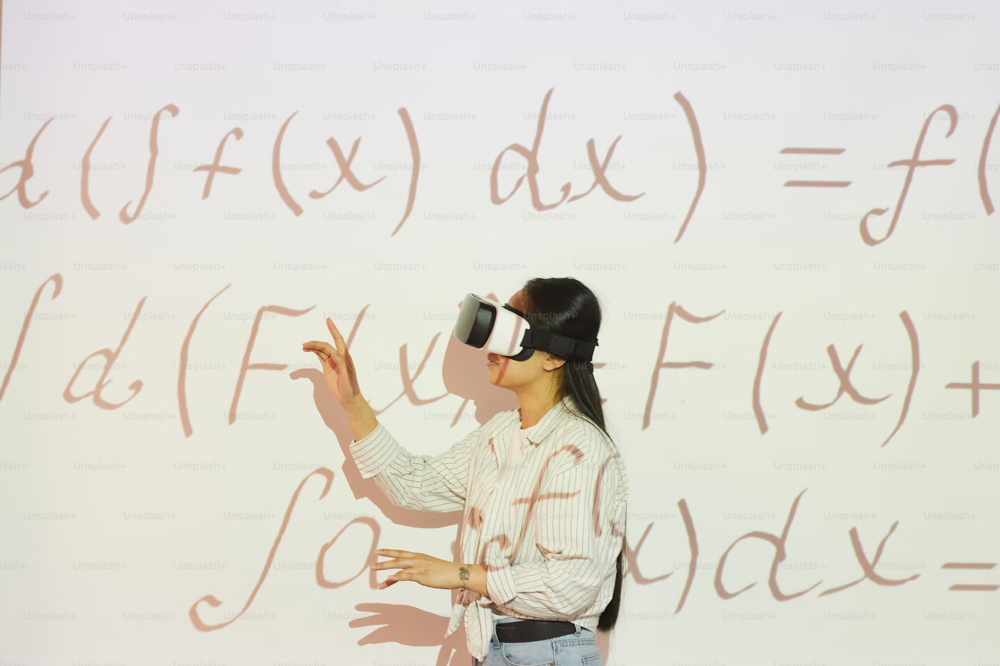
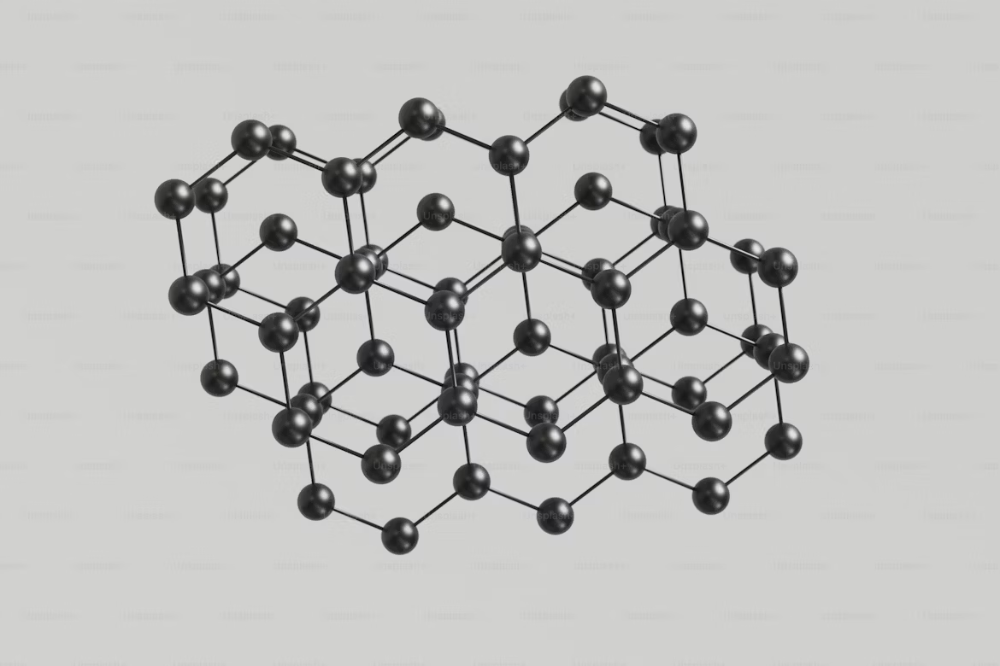
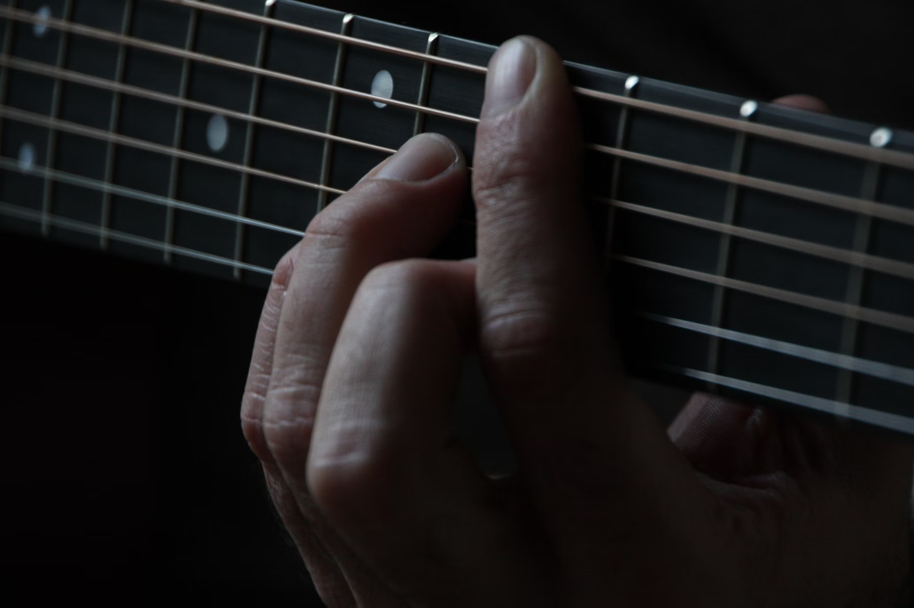
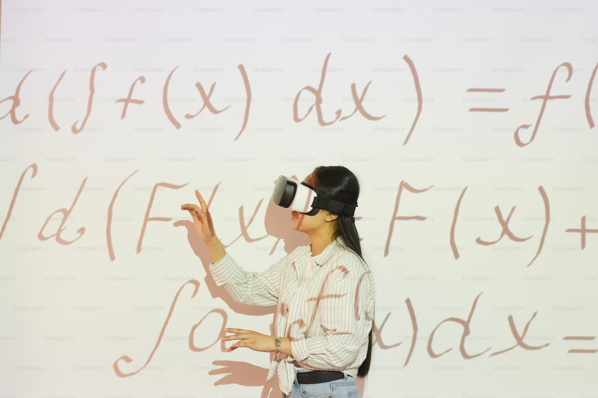
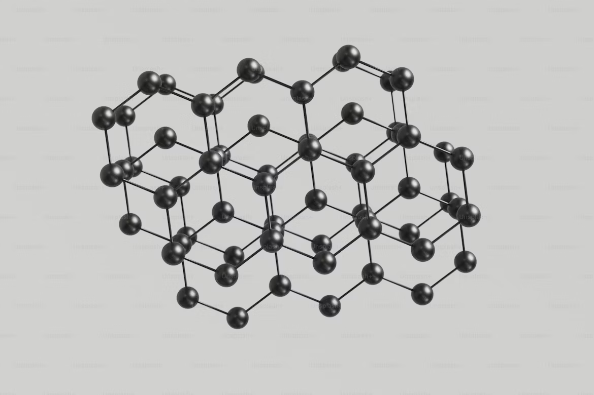
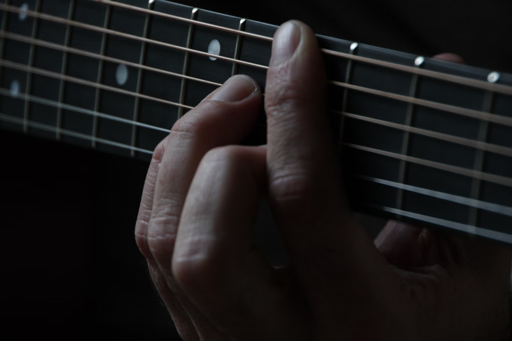

>>> Maths Tools <<<
Linear Algebra
Calculus
>>> Science Tools <<<
Crystallography
Chemistry
>>> Music Tools <<<
Roman Numeral Analysis

Visualisations
I've built these tools based on things that interest me and/or things I wish I had access to when I was first learning about these topics.
Linear Algebra
Calculus
Crystallography
Chemistry
Roman Numeral Analysis
Visualisations
